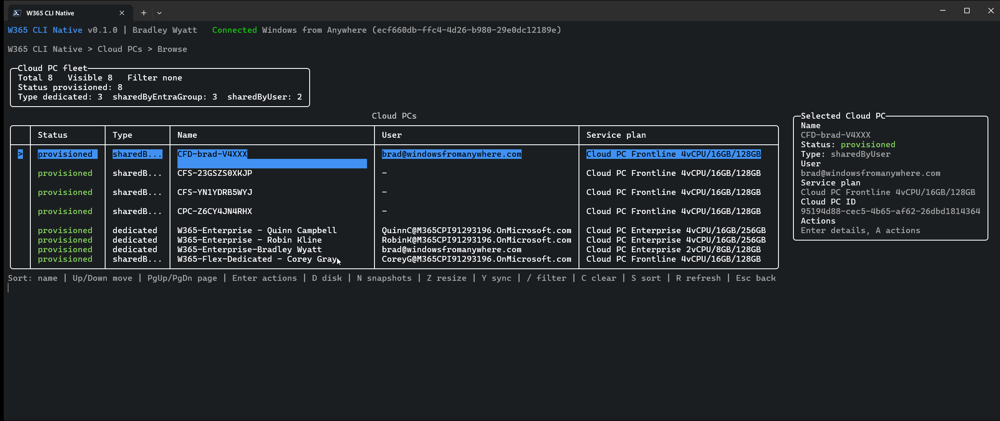
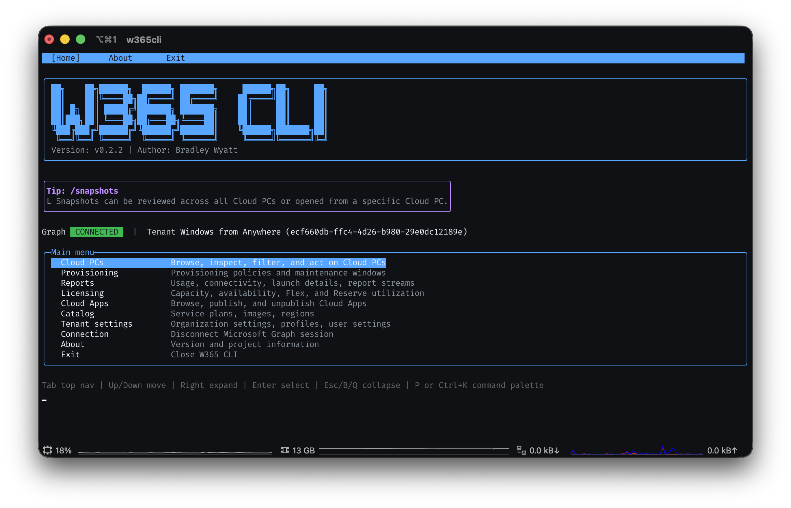

The guide
We built W365 CLI Native because we manage Windows 365 fleets too, and we wanted the same keyboard-first speed we get from every other admin tool we rely on.


W365 CLI Native is a fast, keyboard-first command-line app for admins who are tired of clicking through the Windows 365 admin center just to restart, resize, or check on a Cloud PC. One binary. No browser tabs. No waiting on portal load spinners.

You manage a fleet of Cloud PCs. Every restart, resize, or reprovision means opening a browser, finding the right blade, waiting for a page to load, and clicking through the same flow again. It adds up — and it pulls you out of flow every single time.
The admin center is a web app. Every action is a page load, a blade, a confirmation dialog — multiplied across dozens or hundreds of Cloud PCs.
You know your fleet. You shouldn't need six clicks and three tabs to do something you could type in two seconds if you had the right tool.
If a CLI can manage servers, containers, and cloud infrastructure at speed, Cloud PC management deserves the same treatment.
We built W365 CLI Native because we manage Windows 365 fleets too, and we wanted the same keyboard-first speed we get from every other admin tool we rely on.

No installers, no PowerShell modules to import, no portal bookmarks to hunt for. Just a binary.
Grab the zip for your OS and architecture, extract it, and put it wherever you keep your tools —
we recommend %LOCALAPPDATA%\Programs\W365CLI on Windows.
Run the binary and connect with your Microsoft Graph account. MSAL caches your session so you won't need to sign in again on every launch.
Browse, filter, restart, resize, snapshot, and reprovision Cloud PCs — all from the keyboard, all without a browser tab.
Free, open source, and built for the people who'd rather type than click.